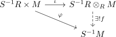

tensor product with the localized ring and localization of a module
Proposition
Let $R$ be a commutative ring, $S \subseteq R$ multiplicatively closeda and $M$ an \(R\)-module Then the map
is a natural with respect to module-homomorphismdand an isomorphism of \(S^{-1}R\)-modules (see: elementary tensor)
Proof
welldefined
Let
Then by definition of the tensor product, there exists a factorization

surjective
for $\frac{m}{s} \in S^{-1}M$, we conclude that $f(\frac{1}{s} \otimes_R m) = \frac{m}{s}$, hence $f$ is surjective
injective
elementary tensors generate tensor product Let $I$ be a finite set and
Suppose $s \coloneqq \prod_{i \in I} s_i \in S$ and $t_i = \prod_{j \neq i} s_j$. Then
By distributivity of the tensor product, we conclude
Hence every element in $S^{-1}R \otimes M$ is of the form $\frac{1}{s} \otimes m$
Assume
or $s' \cdot m = 0$ for some $s' \in S$ and thus